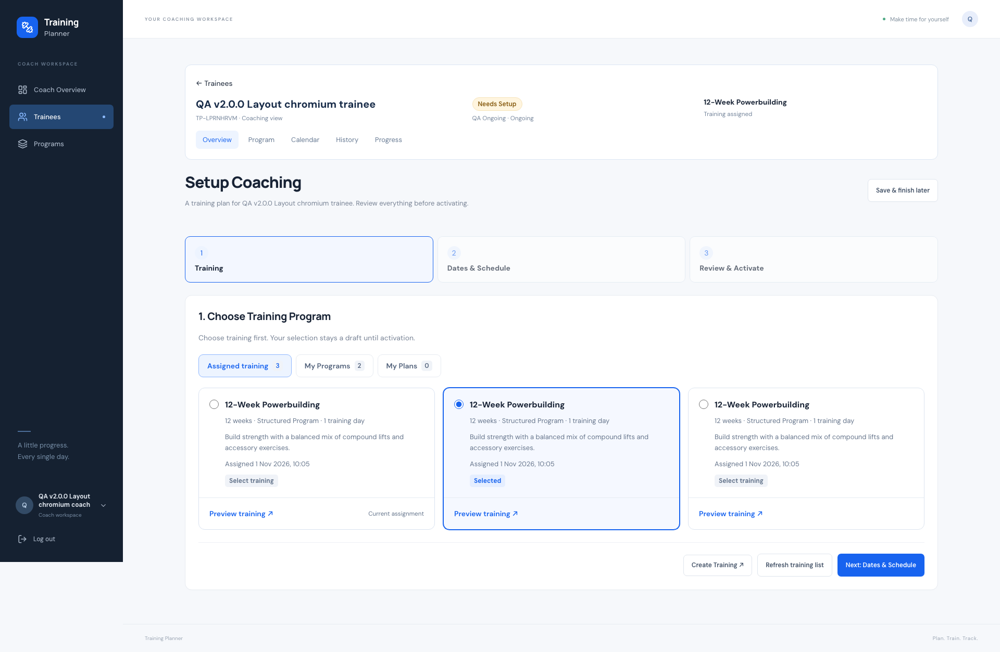
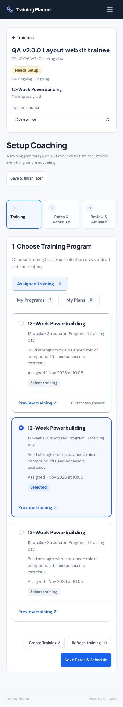

Training Planner · 1 November 2026
v2.3.2 — Coach Setup Layout
READY — DEPLOYED AND VERIFIEDLive app · Source checks · Deployment evidence
What changed
- Setup panels and steps match the trainee header width, including review.
- Training categories are visible buttons with counts and an empty state.
- Radio inputs keep their natural size; the card body selects training and Preview remains separate.
- Selected state, assignment timestamp and current assignment label clarify duplicate names.
Verification
- 601 tests / 11,887 assertions on SQLite and isolated MySQL.
- 37 JavaScript tests and 86 focused Chromium/WebKit layout/interaction checks.
- Widths: 320 × 480, 360, 375, 390, 430, 768, 1280, 1920 and 2560.
- Whole-card selection, radio keyboard controls, independent preview, empty categories, refresh, dates/review and activation verified.
- Build, Pint, Prettier and diff checks passed.
Scope
- UI changes plus read-only assignment metadata. Existing authorization, drafts and atomic activation remain unchanged.
- No migrations or dependency changes.
- Original local data and media verified after cleaning four disposable accounts.
Deployment
- Immutable v2.3.2 (15aa663) deployed directly from v2.3.1 after fresh verified database, runtime, uploads and environment backups. The 70-file patch needs no migration. All 7,250 origin file hashes, 203 public assets and 125 live Chromium/WebKit layout, activation and PWA checks pass. Temporary deployment files and four disposable QA accounts are removed.
Integrity
- All 615 original rows across 22 tables, 461 original upload hashes and environment bytes are preserved. Whole-table equality changed because original users added training during live QA; a read-only comparison with the fresh SQL backup found no missing or changed original row. All 20 additional rows belong to original users, and both new media files remain referenced and preserved. No test accounts remain.
Limitations
- Responsive Chromium/WebKit testing; no physical-phone test.
- Push delivery remains governed by existing production settings; no Push or cron configuration changes.
Live desktop layout

Live mobile layout
